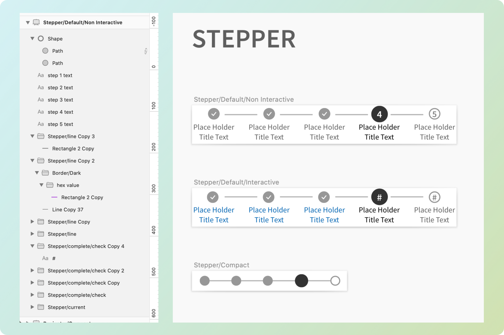
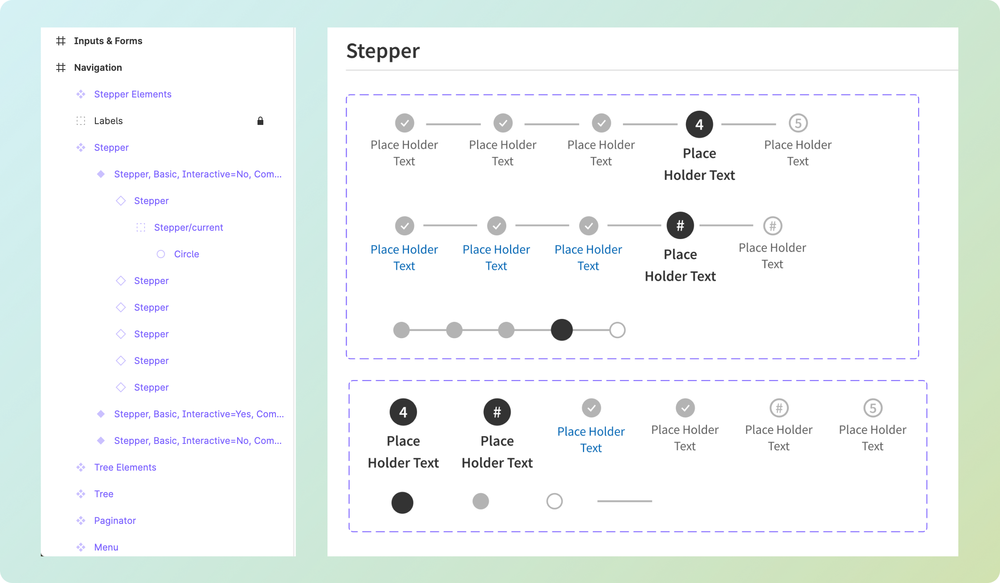

User Experience Designer | Design Systems Team, athenahealth
I led the transition of the internal design system for athenahealth from Sketch to Figma, and subsequently identified several key areas of improvement and usability in the design files themselves. Mostly focusing on design system maturity, these included reconciling differences between the live coded components, adding newer component designs to the master file, and identifying and resolving structural issues within the components themselves. In doing so, I discovered a need for better guidance for the design system and communicated that to management and our UX writer. My goal was to achieve parity between the Sketch and Figma design files while bringing the design system up to current professional standards and expectations, before maintaining the library as the design system continued to mature.
This project was initially intended to transition the design system from Sketch to Figma, but in doing so it became apparent that more was needed. As I inspected the library files, I determined that a complete overhaul was necessary. Many components were missing, built incorrectly, had not been updated to alongside the coded components, and did not use the native functionality of either program, leaving usability and consistency gaps in about half of the system—rendering it difficult if not near impossible to use in its legacy state. Through interviews and user surveys, I discovered that the library had been an inefficient and inadequate resources for the designers for over a year. Given the result of this research, I advocated to upper management that a ground-up overhaul was necessary. My project goal shifted to reflect the need for rebuilding before migrating to a new program.
This design system was built with healthcare workers’ needs at its core. From the display density to accessibility to limited color choice, it prioritizes usability in high-accuracy or high-fatigue scenarios like a patient’s office visit or a billing office’s data entry. Because of the company’s goals of complete interoperability, consistency is required across all of the company’s products. The design teams at athenahealth touch everything from the company’s electronic health records system to billing, mobile, patient-facing and point of service care, and while each service may utilize a different ‘flavor’ of design, some level of uniformity is key. The improvements I identified addressed concerns of inconsistency among the design community we served.
I was brought onto the Design Systems team at athenahealth to market the system internally and to increase the number of users. For the first few months I was the only full-time designer on the team with four more senior developers and a designer who split their time between teams. The team then experienced an almost complete turnover in the first year. As a result the dynamic was fractionated, with limited communication between designers and developers, and I saw a need to rapidly become the spokesperson of the designs themselves while I worked towards expertise.
As a permanent remote employee, I joined the team in November 2019 and traveled to Boston biweekly for sprint ceremonies and in person meetings with the team. The culture of the team was one that was not accustomed to working with a remote employee, as I was the only one, and they were not in the habit of communicating their needs with a designer before beginning the development process. This resulted in delays, frustrations, misunderstandings, and further communication gaps, which we worked to resolve over the next year as the team began to stabilize.
This changed abruptly in March 2020 due to the COVID pandemic, and with the shift to all-digital communication, we were presented with an opportunity to resolve the team’s communication differences, though there was a significant amount of turnover in 2020. In my first year in the role, I reported to five different managers, and it was not until 13 months into my time there that I received consistent professional support.
In early 2021, the team took on a late 2021 deadline for all-new guidance, and management brought on additional support in the form of two contractors who began to address the need for more robust guidance on the design system’s website. Despite our progress in the team’s overall dynamic, expectations and progress reports were not being shared equally between the developers and designers on the team, a challenge which continues to present itself.
Over the summer of 2020, I performed a full audit of the library files and scrubbed the entire library component by component. My primary focus was to eliminate unnecessary structural elements. Research and user feedback had clearly indicated that our library file size was far larger than comparable design system files, and on some occasions interacted poorly with a software bug that caused Sketch to crash. I found that a significant portion of components had color fills applied by masking over a swatch from elsewhere in the file, and other components linked shapes from a ‘primitives’ document that added to the overall complexity and therefore size of the file. Besides these structural changes, I corrected components that were lagging behind their coded counterparts. Overall, the result was a significantly more consistent experience for designers and developers.

Before

After
We learned in December of 2020 that the company would be decommissioning Sketch and our file management software, Abstract, by mid-2021. This prompted the need to move our library files to Figma and support both Figma and Sketch until the transition was complete. A number of early adopters within the company had created their own Figma library out of the design system files from Sketch, but had done so with an outdated version. I was racing their development needs as I began to import the library files into Figma and used this opportunity to organize the components using an updated component taxonomy. Almost simultaneously the design systems team began to bring on components from a sister design system at the company, which I worked to incorporate into both Sketch and Figma.
As my experience with Figma grew I was able to make full use of the additional functionality we gained through the transition, using text styles, color styles, autolayout and variants, a process that evolved over several months as my skill and experience in the program progressed. The library file remains a living document which I maintain as we build and optimize new components for the design system, and as our user’s needs shift to reflect the changing technological and healthcare landscapes.
Today, the design system has reached a level of maturity that will enable the expansion of the component offerings and gain respect throughout the company. The improvements to the library files and my ongoing transparency with other designers using the components has built a new trust in the product, and opened a door for better feedback.
I have gained significant skill and knowledge in design systems, am an emerging subject matter expert in Figma design, and have greatly increased my information architecture knowledge through the construction of complex variants.